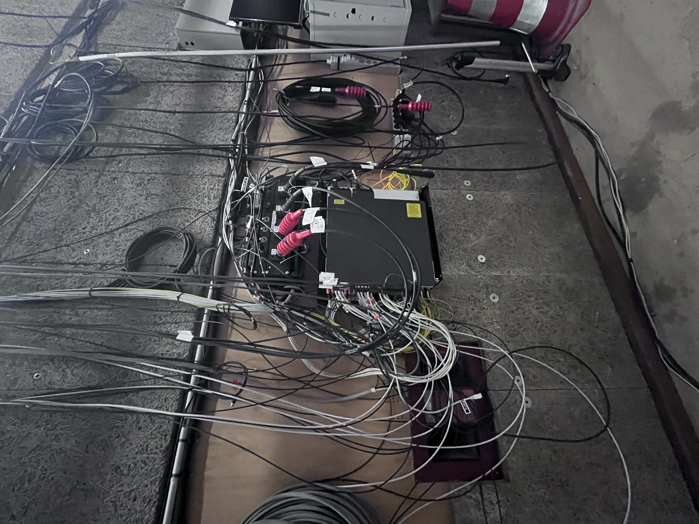
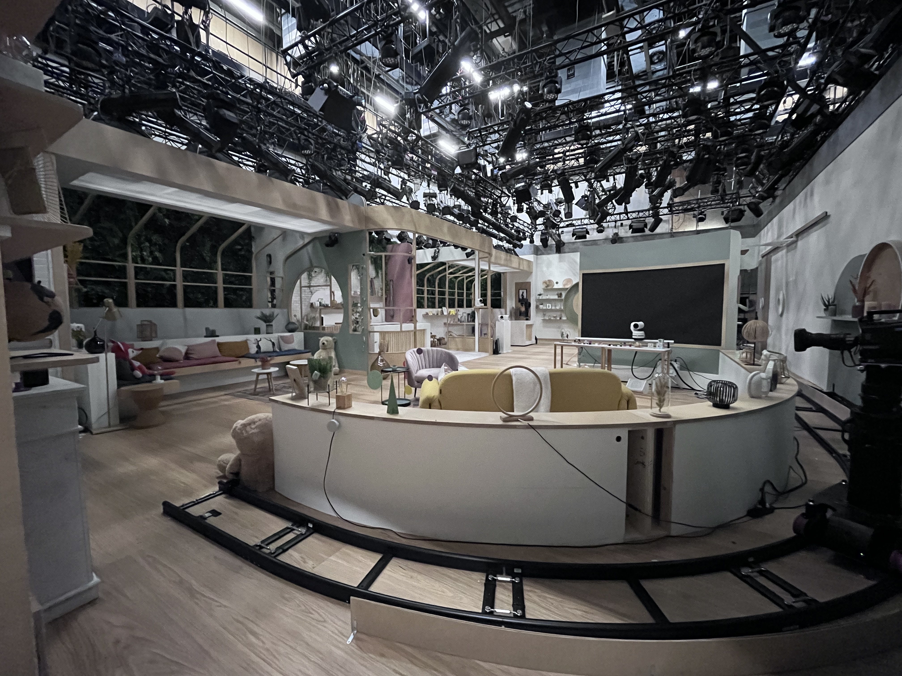
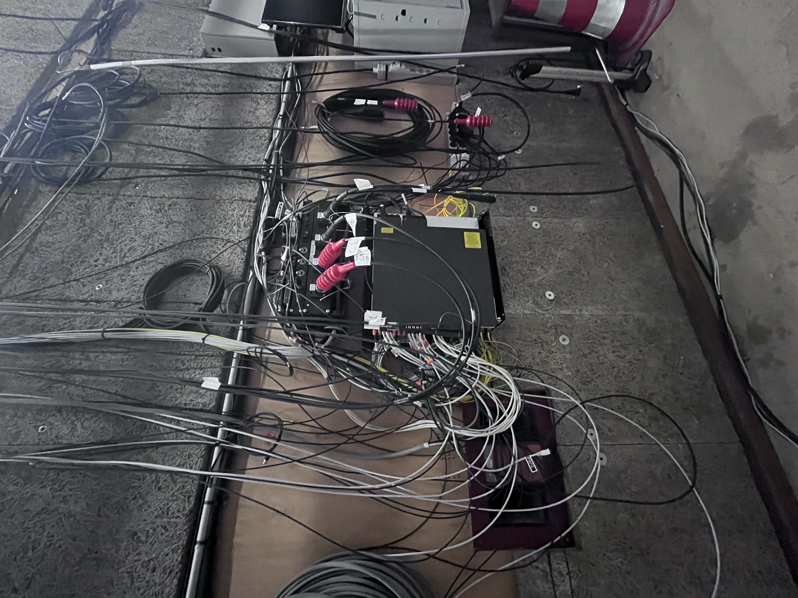
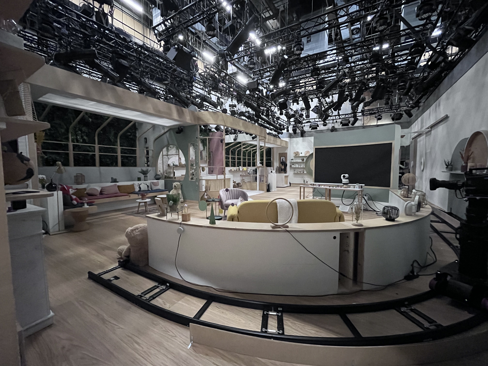
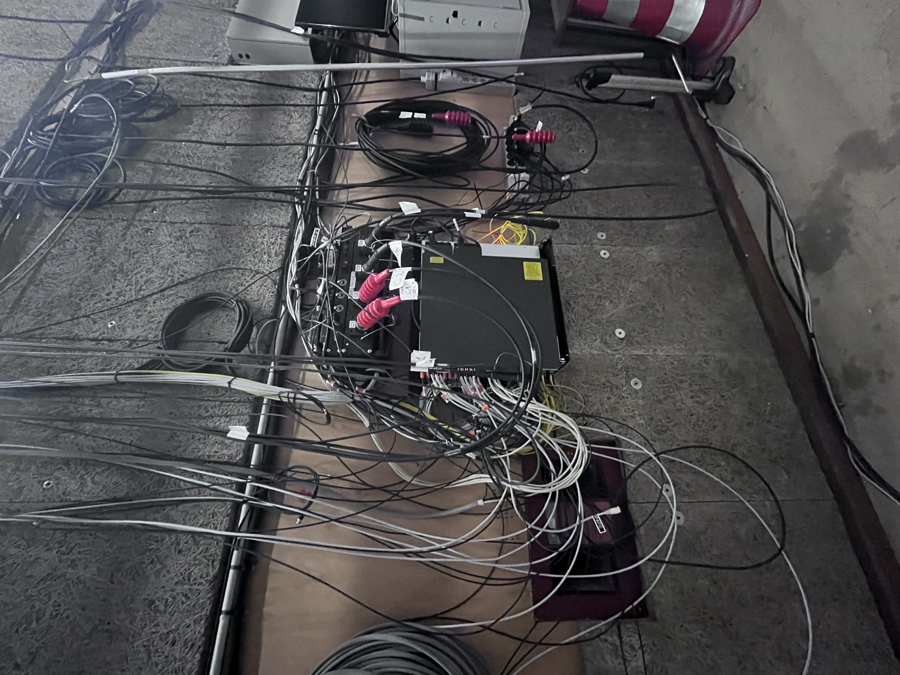
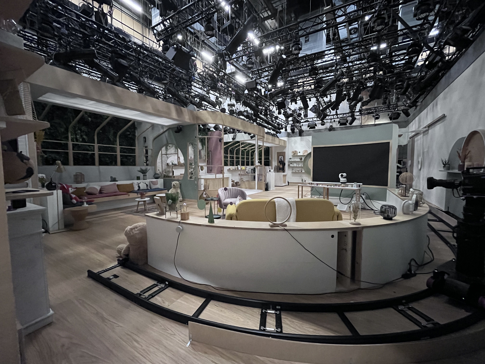
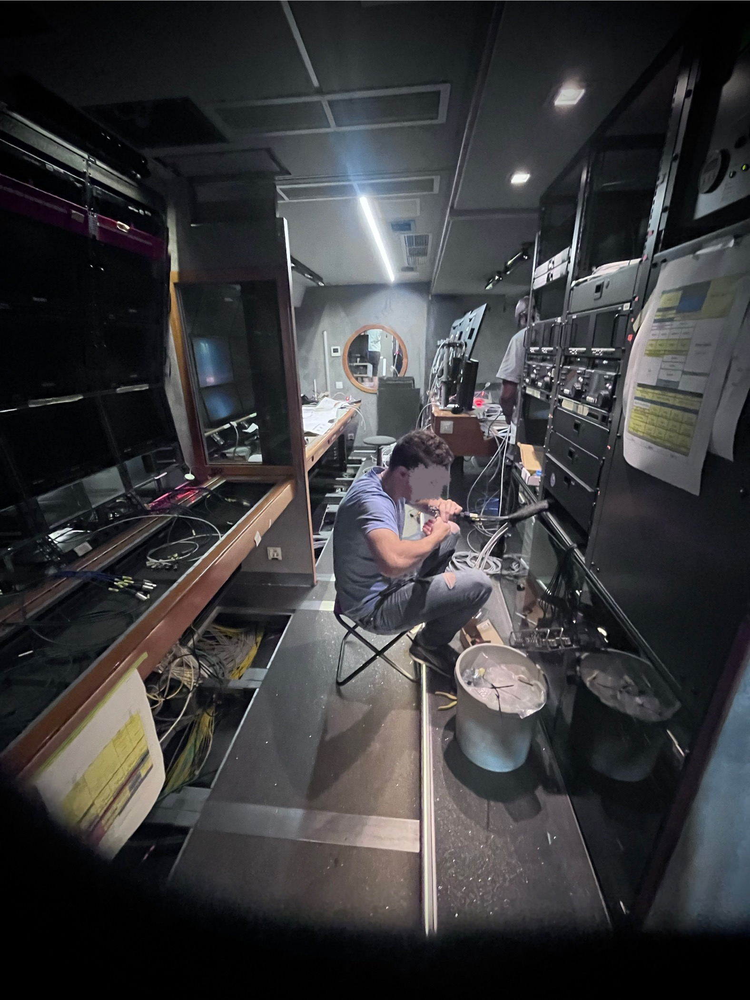
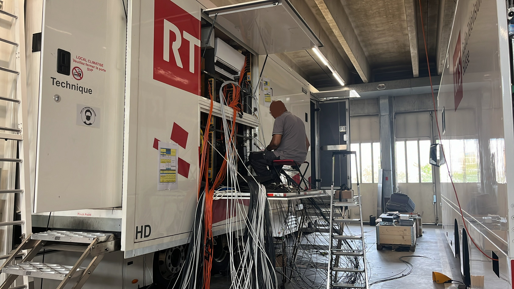
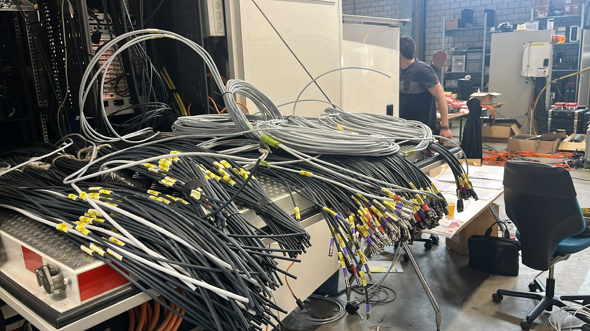

À propos
Cette page est une extension de mon CV : vous y trouverez quelques photos de réalisations ainsi que des références de managers, collègues et clients avec lesquels j’ai travaillé.
Moments clés & projets en images
Un aperçu visuel de mes missions : régies, plateaux, intégrations et coordination de projets.









Références & témoignages
Quelques retours de personnes avec qui j’ai collaboré : managers, collègues et clients.
« Cher Monsieur Caudron,
J’ai toujours apprécié travailler avec vous et j’ai pu mesurer votre disponibilité toujours bienveillante.
Je profite de cette occasion pour vous dire au nom du Groupe toute la sincère gratitude que l’on vous doit pour tout ce que vous avez apporté à Renault pendant votre carrière.
Nul doute que nous allons vous regretter.
Mais vous allez entamer une période nouvelle et passionnante qui vous apportera une expérience formidable. C’est vers ce futur que je regarde en vous souhaitant le meilleur pour cette nouvelle vie.
En attendant de pouvoir vous redire cela de vive voix, je vous adresse l’expression de mes sentiments les plus fidèles et cordiaux.
Jean-Dominique Senard. »
« Jefferson a su coordonner plusieurs projets complexes en gardant un excellent niveau de communication avec les équipes et le client. Fiable, pédagogue et orienté solutions. »
« En attente du mot »
« Jefferson a su coordonner plusieurs projets complexes en gardant un excellent niveau de communication avec les équipes et le client. Fiable, pédagogue et orienté solutions. »
Contact
Intéressé pour échanger sur un projet, une opportunité ou une collaboration ?